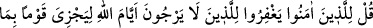
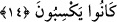
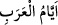

olarak ödüllendirilmiştir.
Âyette şöyle işârî bir mânâ vardır: Gökler, yer ve içindekiler insan için yaratılmıştır.
Bunların varlığı, insanın varlığına tâbidir. Bu mânâdan şu sonuca varılır: Elbette Allah
Teâlâ melekleri Âdem (a.s.)’a secde ettirmiştir. Bu ise emre âmâdeliğin en zirvesidir.
Melekler göklerde ve yerde olanların en değerlileridir. Bunun misâli şudur: Allah Teâlâ
meyveyi yaratmayı murad edince önce meyve ağacını yarattı. Ağacı meyve yüklenmesi
için mutî kıldı. Buna göre bütün bir âlem ağaçtır, bunun semeresi ise insandır. İşte bu
mânânın azametinden dolayı Allah Teâlâ; “Elbette bunda, düşünen bir toplum için
ibretler vardır” buyurmaktadır. Yâni bu mânâda gönülleri îmân ve irfân nûruyla
nurlanmış olan topluluk için insanın şerefine ve kemâlâtına birçok delâletler vardır,
demektir. et-Te’vilâtu’n-Necmiyye’ de böyledir.
14. İmân edenlere söyle: Allah’ın (ceza) günlerinin geleceğini ummayanları
bağışlasınlar. Çünkü Allah her toplumu, yaptığına göre cezalandıracaktır.
“İnananlara: Allah’ın (cezâ) günlerinin geleceğini ummayanları” bağışlayıp
affediniz, de. “Affetsinler” kavl-i ilâhîsi, İbrahim sûresi 31. âyetteki “İnanan
kullarıma söyle namazı kılsınlar…” kavl-i ilâhîsi gibidir. Yâni bu ifâdenin izâhı;
“Habibim onlara namazı ikâme ediniz” de ki onlar da namazı ikâme etsinler” demektir.
Keşşâf sahibi Zemahşerî, müfessirler burada “yukîmüssalâte”nin “li yukîmussalâte”
şeklinde yorumlanmasını tecviz ettiler, demiştir. Bu durumda, “li yukîmussalâte” kavlin
mekûlu yâni söylenen söz olur. Burada “lâm” hazfedilmiştir. Çünkü “ (söyle)” emri,
“lâm”dan bedel olarak yeterlidir. Başta “” emri olmaksızın “lâm” hazfedilerek daha
başlangıçta “yukîmu” denilse, bu câiz olmaz. Racânın hakikati sevgilide olur. Burada
mecâza hamledilmiştir. Racâ; “bekleme ve endişe” mânâsındadır.
Mânâ şudur: Müminler, Allah Teâlâ’nın geçmiş ümmetlerde düşmanlarına icrâ ettiği
vak’aları beklemeyip bu durumdan endişe etmeyenleri affedip onlara hoşgörülü
davransınlar. Çünkü bunlar geçmiş ümmetlerin başlarına gelen vak’alara “ (arap
günleri)” derler. İşte Medine yakınlarında bir mevki olan “Buas” günü bunlardandır.
Bugün araplarca mâruf ve meşhurdur. Kâmûs’ta da böyledir.
Denilmiştir ki; buradaki mânâ, bu kâfirler, Allah Teâlâ’nın müminleri ödüllendirmek
için ve müminlere kurtuluş için tayin ettiği vakti ummazlar. Burada “eyyâmullah” diye
“eyyâm”ın Allah lafzına izâfesi, “Beytullah” kelimesi gibidir. Yâni o günlerin şânına
tâzim için bu izâfet yapılmıştır. Bu âyet cihâd ve savaş âyetinden önce nâzil olup cihâd